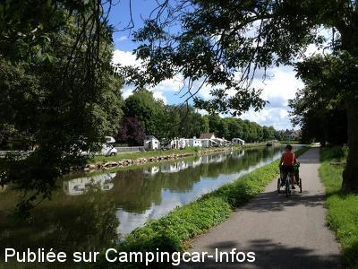
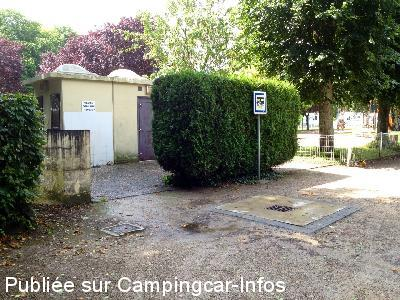
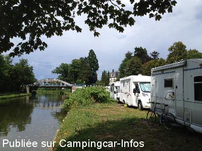
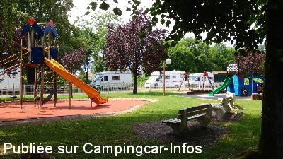
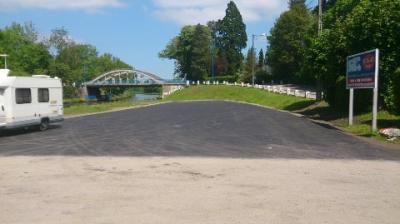
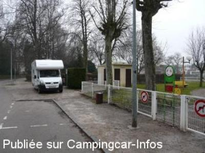

ASN = Aire de services avec stationnement nuit possible de :
THAON LES VOSGES
(N° 705)
Accès/adresse :
Rue du Coignot
88150 THAON LES VOSGES
88150 THAON LES VOSGES
Latitude : (Nord) 48.25011° Décimaux ou 48° 15′ 0′′
Longitude : (Est) 6.42526° Décimaux ou 6° 25′ 30′′
Tarif : 2016
Stationnement gratuit
Services : 2,80 €
Type de borne : Artisanale
Services :


Tous commerces
Autres informations :
Ouvert du 15/03 au 15/11
20 emplacements bitumés
Tél : +33(0)329 391 545

Le 10/08/2013 par SBH

Le 06/08/2013 par SBH

Le 06/08/2013 par SBH

Le 06/08/2013 par SBH

Le 02/06/2013 par Véro & Dan

Le 05/01/2008 par PhilR
de
Juniau17
le 04/05/2016 :
§ Prix des services 2,80 €, paiement uniquement par carte bancaire. Pour les habités : plus d'eau aux robinets des alentours, le stationnement sur la berge le long du canal est maintenant interdit (domaine des voies navigables).
Il serait souhaitable que la mairie matérialise les emplacements, car seul le parking goudronné est utilisable.
§ Prix des services 2,80 €, paiement uniquement par carte bancaire. Pour les habités : plus d'eau aux robinets des alentours, le stationnement sur la berge le long du canal est maintenant interdit (domaine des voies navigables).
Il serait souhaitable que la mairie matérialise les emplacements, car seul le parking goudronné est utilisable.
de
courtier
le 09/01/2016 :
aire de service payante pour 2016 nouvelle borne plus pratique mais à voir installer fin 2015 pas encore en service à ce jour
aire de service payante pour 2016 nouvelle borne plus pratique mais à voir installer fin 2015 pas encore en service à ce jour
de
Juniau17
le 23/09/2015 :
Dimanche 22/09/2015 dans la matinée. Lieu de vidange cassette eaux noires fermés. Je n'ai pas vidangé ma cassette. Par contre d'autres camping-caristes ne se sont pas gênés pour le faire dans la première bouche trouvée, notamment celle au pied du robinet d'eau propre.
Pourquoi n'y a t'il pas une installation accessible pour cet usage ? Certes c'est gratuit, mais payer pour une meilleure prestation est souhaitable.
Dimanche 22/09/2015 dans la matinée. Lieu de vidange cassette eaux noires fermés. Je n'ai pas vidangé ma cassette. Par contre d'autres camping-caristes ne se sont pas gênés pour le faire dans la première bouche trouvée, notamment celle au pied du robinet d'eau propre.
Pourquoi n'y a t'il pas une installation accessible pour cet usage ? Certes c'est gratuit, mais payer pour une meilleure prestation est souhaitable.
de
pacham51
le 12/10/2014 :
passage le 22 09 2014 calme malgrés la route bord de canal service gratuit
passage le 22 09 2014 calme malgrés la route bord de canal service gratuit
de
la normandie
le 18/06/2014 :
très bien au calme vue magnifique service gratuit(eau et vidange) jolie ville mais dommage certains camping car prennent la place de deux en étant mal garer
très bien au calme vue magnifique service gratuit(eau et vidange) jolie ville mais dommage certains camping car prennent la place de deux en étant mal garer
de
db76
le 12/04/2014 :
Sommes passés sur cette aire très agréble par beau temps. Dommage que des ccaristes se soient mis parallèles au canal au lieu de perpendiculaires comme indiqué sur le règlement de l'aire, et prenaient 3 places chacun.Jolie ville à proximité immédiate.
Sommes passés sur cette aire très agréble par beau temps. Dommage que des ccaristes se soient mis parallèles au canal au lieu de perpendiculaires comme indiqué sur le règlement de l'aire, et prenaient 3 places chacun.Jolie ville à proximité immédiate.
de
Sicot Christophe
le 09/04/2014 :
§ Aire tres bien,un peux surpeuplé, mais c'est la rançon de la gloire.Tous y est gratuit,eau,vidange,(les cassettes sont a vidanger dans les toillettes mais celles ci étaient fermer le 4 avril donc les vidanges se faisait sur la grille qui ce situe sous le robinet pour prendre de l'eau,donc pas tres propre car certains rentre le robinet dans les cassettes.Jardin d'enfants juste a coté et les commerces sont a 150m.Merci pour la ville.
§ Aire tres bien,un peux surpeuplé, mais c'est la rançon de la gloire.Tous y est gratuit,eau,vidange,(les cassettes sont a vidanger dans les toillettes mais celles ci étaient fermer le 4 avril donc les vidanges se faisait sur la grille qui ce situe sous le robinet pour prendre de l'eau,donc pas tres propre car certains rentre le robinet dans les cassettes.Jardin d'enfants juste a coté et les commerces sont a 150m.Merci pour la ville.
de
pivoinerose
le 20/05/2012 :
De passage en mai 2012 : il avait plu : terrain boueux. N'avons pas trouvé le "charme" annoncé par d'autres camping caristes. Ne sommes pas restés.
De passage en mai 2012 : il avait plu : terrain boueux. N'avons pas trouvé le "charme" annoncé par d'autres camping caristes. Ne sommes pas restés.
de
biker27
le 18/05/2012 :
de passage au mois de mai aire au calme avec service gratuit le long du canal merci a la ville
de passage au mois de mai aire au calme avec service gratuit le long du canal merci a la ville
de
coco7627
le 31/07/2011 :
belle aire au bord de l'eau , repos garantie pres du pont , idéale pour les pecheurs
j'y retournerais volontier
belle aire au bord de l'eau , repos garantie pres du pont , idéale pour les pecheurs
j'y retournerais volontier
de
dan
le 20/08/2009 :
Nous avons passé 2 nuits. Lorsque nous sommes arrivés nous avons appris qu'un camping-cariste s'était fait voler les enjoliveurs de son CC. Nous sommes quand même restés et rien à signaler. Aire de jeux attenant à l'aire, les enfants se sont bien amusés. Centre ville 200m. Avons préféré cette aire à celle de Charmes.
Nous avons passé 2 nuits. Lorsque nous sommes arrivés nous avons appris qu'un camping-cariste s'était fait voler les enjoliveurs de son CC. Nous sommes quand même restés et rien à signaler. Aire de jeux attenant à l'aire, les enfants se sont bien amusés. Centre ville 200m. Avons préféré cette aire à celle de Charmes.
de
joelle et guy
le 14/04/2008 :
Aire agréable quand il n'a pas plu. C'est vrai que certains camping-caristes prennent leurs aises, ainsi qu'on le voit sur certaines photos. Il suffit de changer de sens pour se garer et cela permet à un camping-car de trouver une place. Malheureusement le monde des camping-caristes est comme le reste : chacun pour soi.
Aire agréable quand il n'a pas plu. C'est vrai que certains camping-caristes prennent leurs aises, ainsi qu'on le voit sur certaines photos. Il suffit de changer de sens pour se garer et cela permet à un camping-car de trouver une place. Malheureusement le monde des camping-caristes est comme le reste : chacun pour soi.